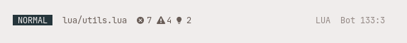

<?xml version="1.0" encoding="utf-8"?>
<!DOCTYPE html PUBLIC "-//W3C//DTD XHTML 1.0 Strict//EN"
"http://www.w3.org/TR/xhtml1/DTD/xhtml1-strict.dtd">
<html xmlns="http://www.w3.org/1999/xhtml" lang="en" xml:lang="en">
<head>
<!-- 2022-01-22 Sat 12:59 -->
<meta http-equiv="Content-Type" content="text/html;charset=utf-8" />
<meta name="viewport" content="width=device-width, initial-scale=1" />
<title>Custom Neovim Statusline</title>
<meta name="author" content="nuxsh" />
<meta name="generator" content="Org Mode" />
<style>
  #content { max-width: 60em; margin: auto; }
  .title  { text-align: center;
             margin-bottom: .2em; }
  .subtitle { text-align: center;
              font-size: medium;
              font-weight: bold;
              margin-top:0; }
  .todo   { font-family: monospace; color: red; }
  .done   { font-family: monospace; color: green; }
  .priority { font-family: monospace; color: orange; }
  .tag    { background-color: #eee; font-family: monospace;
            padding: 2px; font-size: 80%; font-weight: normal; }
  .timestamp { color: #bebebe; }
  .timestamp-kwd { color: #5f9ea0; }
  .org-right  { margin-left: auto; margin-right: 0px;  text-align: right; }
  .org-left   { margin-left: 0px;  margin-right: auto; text-align: left; }
  .org-center { margin-left: auto; margin-right: auto; text-align: center; }
  .underline { text-decoration: underline; }
  #postamble p, #preamble p { font-size: 90%; margin: .2em; }
  p.verse { margin-left: 3%; }
  pre {
    border: 1px solid #e6e6e6;
    border-radius: 3px;
    background-color: #f2f2f2;
    padding: 8pt;
    font-family: monospace;
    overflow: auto;
    margin: 1.2em;
  }
  pre.src {
    position: relative;
    overflow: auto;
  }
  pre.src:before {
    display: none;
    position: absolute;
    top: -8px;
    right: 12px;
    padding: 3px;
    color: #555;
    background-color: #f2f2f299;
  }
  pre.src:hover:before { display: inline; margin-top: 14px;}
  /* Languages per Org manual */
  pre.src-asymptote:before { content: 'Asymptote'; }
  pre.src-awk:before { content: 'Awk'; }
  pre.src-authinfo::before { content: 'Authinfo'; }
  pre.src-C:before { content: 'C'; }
  /* pre.src-C++ doesn't work in CSS */
  pre.src-clojure:before { content: 'Clojure'; }
  pre.src-css:before { content: 'CSS'; }
  pre.src-D:before { content: 'D'; }
  pre.src-ditaa:before { content: 'ditaa'; }
  pre.src-dot:before { content: 'Graphviz'; }
  pre.src-calc:before { content: 'Emacs Calc'; }
  pre.src-emacs-lisp:before { content: 'Emacs Lisp'; }
  pre.src-fortran:before { content: 'Fortran'; }
  pre.src-gnuplot:before { content: 'gnuplot'; }
  pre.src-haskell:before { content: 'Haskell'; }
  pre.src-hledger:before { content: 'hledger'; }
  pre.src-java:before { content: 'Java'; }
  pre.src-js:before { content: 'Javascript'; }
  pre.src-latex:before { content: 'LaTeX'; }
  pre.src-ledger:before { content: 'Ledger'; }
  pre.src-lisp:before { content: 'Lisp'; }
  pre.src-lilypond:before { content: 'Lilypond'; }
  pre.src-lua:before { content: 'Lua'; }
  pre.src-matlab:before { content: 'MATLAB'; }
  pre.src-mscgen:before { content: 'Mscgen'; }
  pre.src-ocaml:before { content: 'Objective Caml'; }
  pre.src-octave:before { content: 'Octave'; }
  pre.src-org:before { content: 'Org mode'; }
  pre.src-oz:before { content: 'OZ'; }
  pre.src-plantuml:before { content: 'Plantuml'; }
  pre.src-processing:before { content: 'Processing.js'; }
  pre.src-python:before { content: 'Python'; }
  pre.src-R:before { content: 'R'; }
  pre.src-ruby:before { content: 'Ruby'; }
  pre.src-sass:before { content: 'Sass'; }
  pre.src-scheme:before { content: 'Scheme'; }
  pre.src-screen:before { content: 'Gnu Screen'; }
  pre.src-sed:before { content: 'Sed'; }
  pre.src-sh:before { content: 'shell'; }
  pre.src-sql:before { content: 'SQL'; }
  pre.src-sqlite:before { content: 'SQLite'; }
  /* additional languages in org.el's org-babel-load-languages alist */
  pre.src-forth:before { content: 'Forth'; }
  pre.src-io:before { content: 'IO'; }
  pre.src-J:before { content: 'J'; }
  pre.src-makefile:before { content: 'Makefile'; }
  pre.src-maxima:before { content: 'Maxima'; }
  pre.src-perl:before { content: 'Perl'; }
  pre.src-picolisp:before { content: 'Pico Lisp'; }
  pre.src-scala:before { content: 'Scala'; }
  pre.src-shell:before { content: 'Shell Script'; }
  pre.src-ebnf2ps:before { content: 'ebfn2ps'; }
  /* additional language identifiers per "defun org-babel-execute"
       in ob-*.el */
  pre.src-cpp:before  { content: 'C++'; }
  pre.src-abc:before  { content: 'ABC'; }
  pre.src-coq:before  { content: 'Coq'; }
  pre.src-groovy:before  { content: 'Groovy'; }
  /* additional language identifiers from org-babel-shell-names in
     ob-shell.el: ob-shell is the only babel language using a lambda to put
     the execution function name together. */
  pre.src-bash:before  { content: 'bash'; }
  pre.src-csh:before  { content: 'csh'; }
  pre.src-ash:before  { content: 'ash'; }
  pre.src-dash:before  { content: 'dash'; }
  pre.src-ksh:before  { content: 'ksh'; }
  pre.src-mksh:before  { content: 'mksh'; }
  pre.src-posh:before  { content: 'posh'; }
  /* Additional Emacs modes also supported by the LaTeX listings package */
  pre.src-ada:before { content: 'Ada'; }
  pre.src-asm:before { content: 'Assembler'; }
  pre.src-caml:before { content: 'Caml'; }
  pre.src-delphi:before { content: 'Delphi'; }
  pre.src-html:before { content: 'HTML'; }
  pre.src-idl:before { content: 'IDL'; }
  pre.src-mercury:before { content: 'Mercury'; }
  pre.src-metapost:before { content: 'MetaPost'; }
  pre.src-modula-2:before { content: 'Modula-2'; }
  pre.src-pascal:before { content: 'Pascal'; }
  pre.src-ps:before { content: 'PostScript'; }
  pre.src-prolog:before { content: 'Prolog'; }
  pre.src-simula:before { content: 'Simula'; }
  pre.src-tcl:before { content: 'tcl'; }
  pre.src-tex:before { content: 'TeX'; }
  pre.src-plain-tex:before { content: 'Plain TeX'; }
  pre.src-verilog:before { content: 'Verilog'; }
  pre.src-vhdl:before { content: 'VHDL'; }
  pre.src-xml:before { content: 'XML'; }
  pre.src-nxml:before { content: 'XML'; }
  /* add a generic configuration mode; LaTeX export needs an additional
     (add-to-list 'org-latex-listings-langs '(conf " ")) in .emacs */
  pre.src-conf:before { content: 'Configuration File'; }

  table { border-collapse:collapse; }
  caption.t-above { caption-side: top; }
  caption.t-bottom { caption-side: bottom; }
  td, th { vertical-align:top;  }
  th.org-right  { text-align: center;  }
  th.org-left   { text-align: center;   }
  th.org-center { text-align: center; }
  td.org-right  { text-align: right;  }
  td.org-left   { text-align: left;   }
  td.org-center { text-align: center; }
  dt { font-weight: bold; }
  .footpara { display: inline; }
  .footdef  { margin-bottom: 1em; }
  .figure { padding: 1em; }
  .figure p { text-align: center; }
  .equation-container {
    display: table;
    text-align: center;
    width: 100%;
  }
  .equation {
    vertical-align: middle;
  }
  .equation-label {
    display: table-cell;
    text-align: right;
    vertical-align: middle;
  }
  .inlinetask {
    padding: 10px;
    border: 2px solid gray;
    margin: 10px;
    background: #ffffcc;
  }
  #org-div-home-and-up
   { text-align: right; font-size: 70%; white-space: nowrap; }
  textarea { overflow-x: auto; }
  .linenr { font-size: smaller }
  .code-highlighted { background-color: #ffff00; }
  .org-info-js_info-navigation { border-style: none; }
  #org-info-js_console-label
    { font-size: 10px; font-weight: bold; white-space: nowrap; }
  .org-info-js_search-highlight
    { background-color: #ffff00; color: #000000; font-weight: bold; }
  .org-svg { width: 90%; }
</style>
<link rel="stylesheet" type="text/css" href="../css/org.css" />
</head>
<body>
<div id="org-div-home-and-up">
 <a accesskey="h" href="index.html"> UP </a>
 |
 <a accesskey="H" href="../index.html"> HOME </a>
</div><div id="content" class="content">
<h1 class="title">Custom Neovim Statusline</h1>
<div id="table-of-contents" role="doc-toc">
<h2>Table of Contents</h2>
<div id="text-table-of-contents" role="doc-toc">
<ul>
<li><a href="#orgdc69b03">1. Introduction</a></li>
<li><a href="#orgd72bcd8">2. Prerequisites</a></li>
<li><a href="#orga634a2b">3. Statusline Modules</a>
<ul>
<li><a href="#org5854583">3.1. Mode Indicator</a></li>
<li><a href="#orgf44ecbc">3.2. File</a></li>
<li><a href="#org0fffde9">3.3. LSP</a></li>
<li><a href="#orgf30aedc">3.4. Filetype</a></li>
<li><a href="#orgad73af0">3.5. Line Info</a></li>
</ul>
</li>
<li><a href="#orgf0e77c1">4. Building the Statusline</a></li>
<li><a href="#orge1c5974">5. Showing the Statusline</a></li>
<li><a href="#orgeb0ee6f">6. Bonus modules</a>
<ul>
<li><a href="#org0c14de2">6.1. Git Info</a></li>
</ul>
</li>
<li><a href="#org11ef3eb">7. More Resources</a></li>
</ul>
</div>
</div>

<div id="outline-container-orgdc69b03" class="outline-2">
<h2 id="orgdc69b03"><span class="section-number-2">1.</span> Introduction</h2>
<div class="outline-text-2" id="text-1">
<p>
The statusline is an integral part of (neo)vim's interface. I'd always fancied making my own statusline, and galaxyline becoming unmaintained pushed me to make the switch.<br />
This is what it looks like right now:<br />
<br />
</p>
</div>
</div>

<div id="outline-container-orgd72bcd8" class="outline-2">
<h2 id="orgd72bcd8"><span class="section-number-2">2.</span> Prerequisites</h2>
<div class="outline-text-2" id="text-2">
<ul class="org-ul">
<li>Neovim 0.6 or above (0.5 might work too, but I can't guarantee it)<br /></li>
<li>A Nerd Font<br /></li>
</ul>

<p>
&#x2026;and that's it.<br />
</p>

<p>
Let's get started.<br />
</p>

<p>
Oh, my aliases. What would I ever do without you?<br />
</p>
<div class="org-src-container">
<pre class="src src-lua"><span style="color: #a8334c;">local</span> <span style="color: #685c56;">fn</span> = vim.fn
<span style="color: #a8334c;">local</span> <span style="color: #685c56;">api</span> = vim.api
</pre>
</div>
</div>
</div>

<div id="outline-container-orga634a2b" class="outline-2">
<h2 id="orga634a2b"><span class="section-number-2">3.</span> Statusline Modules</h2>
<div class="outline-text-2" id="text-3">
</div>
<div id="outline-container-org5854583" class="outline-3">
<h3 id="org5854583"><span class="section-number-3">3.1.</span> Mode Indicator</h3>
<div class="outline-text-3" id="text-3-1">
<p>
The code below creates a table that defines the string name (which will be displayed in the statusline) for each output of <code>vim.api.nvim_get_mode().mode</code>.<br />
</p>
<div class="org-src-container">
<pre class="src src-lua"><span style="color: #a8334c;">local</span> <span style="color: #685c56;">modes</span> = {
  [<span style="color: #597a37;">"n"</span>] = <span style="color: #597a37;">"NORMAL"</span>,
  [<span style="color: #597a37;">"no"</span>] = <span style="color: #597a37;">"NORMAL"</span>,
  [<span style="color: #597a37;">"v"</span>] = <span style="color: #597a37;">"VISUAL"</span>,
  [<span style="color: #597a37;">"V"</span>] = <span style="color: #597a37;">"VISUAL LINE"</span>,
  [<span style="color: #597a37;">"&#22;"</span>] = <span style="color: #597a37;">"VISUAL BLOCK"</span>,
  [<span style="color: #597a37;">"s"</span>] = <span style="color: #597a37;">"SELECT"</span>,
  [<span style="color: #597a37;">"S"</span>] = <span style="color: #597a37;">"SELECT LINE"</span>,
  [<span style="color: #597a37;">"&#19;"</span>] = <span style="color: #597a37;">"SELECT BLOCK"</span>,
  [<span style="color: #597a37;">"i"</span>] = <span style="color: #597a37;">"INSERT"</span>,
  [<span style="color: #597a37;">"ic"</span>] = <span style="color: #597a37;">"INSERT"</span>,
  [<span style="color: #597a37;">"R"</span>] = <span style="color: #597a37;">"REPLACE"</span>,
  [<span style="color: #597a37;">"Rv"</span>] = <span style="color: #597a37;">"VISUAL REPLACE"</span>,
  [<span style="color: #597a37;">"c"</span>] = <span style="color: #597a37;">"COMMAND"</span>,
  [<span style="color: #597a37;">"cv"</span>] = <span style="color: #597a37;">"VIM EX"</span>,
  [<span style="color: #597a37;">"ce"</span>] = <span style="color: #597a37;">"EX"</span>,
  [<span style="color: #597a37;">"r"</span>] = <span style="color: #597a37;">"PROMPT"</span>,
  [<span style="color: #597a37;">"rm"</span>] = <span style="color: #597a37;">"MOAR"</span>,
  [<span style="color: #597a37;">"r?"</span>] = <span style="color: #597a37;">"CONFIRM"</span>,
  [<span style="color: #597a37;">"!"</span>] = <span style="color: #597a37;">"SHELL"</span>,
  [<span style="color: #597a37;">"t"</span>] = <span style="color: #597a37;">"TERMINAL"</span>,
}
</pre>
</div>


<p>
Now, to actually get the mode and match it with <code>modes</code>:<br />
</p>
<div class="org-src-container">
<pre class="src src-lua"><span style="color: #a8334c;">local</span> <span style="color: #a8334c;">function</span> <span style="color: #944927;">mode</span>()
  <span style="color: #a8334c;">local</span> <span style="color: #685c56;">current_mode</span> = api.nvim_get_mode().mode
  <span style="color: #a8334c;">return</span> <span style="color: #286486;">string</span>.<span style="color: #286486;">format</span>(<span style="color: #597a37;">" %s "</span>, modes[current_mode]):upper()
<span style="color: #a8334c;">end</span>
</pre>
</div>

<p>
I'd like to have different colors for different modes. The function below returns the color for the current mode. I have set these highlights in another part of my configuration, for each theme.<br />
If you don't want different colors for each mode, simply remove this function and remove all occurences of it below. Everything should still work.<br />
</p>
<div class="org-src-container">
<pre class="src src-lua"><span style="color: #a8334c;">local</span> <span style="color: #a8334c;">function</span> <span style="color: #944927;">update_mode_colors</span>()
  <span style="color: #a8334c;">local</span> <span style="color: #685c56;">current_mode</span> = api.nvim_get_mode().mode
  <span style="color: #a8334c;">local</span> <span style="color: #685c56;">mode_color</span> = <span style="color: #597a37;">"%#StatusLineAccent#"</span>
  <span style="color: #a8334c;">if</span> current_mode == <span style="color: #597a37;">"n"</span> <span style="color: #a8334c;">then</span>
      mode_color = <span style="color: #597a37;">"%#StatuslineAccent#"</span>
  <span style="color: #a8334c;">elseif</span> current_mode == <span style="color: #597a37;">"i"</span> <span style="color: #a8334c;">or</span> current_mode == <span style="color: #597a37;">"ic"</span> <span style="color: #a8334c;">then</span>
      mode_color = <span style="color: #597a37;">"%#StatuslineInsertAccent#"</span>
  <span style="color: #a8334c;">elseif</span> current_mode == <span style="color: #597a37;">"v"</span> <span style="color: #a8334c;">or</span> current_mode == <span style="color: #597a37;">"V"</span> <span style="color: #a8334c;">or</span> current_mode == <span style="color: #597a37;">"&#22;"</span> <span style="color: #a8334c;">then</span>
      mode_color = <span style="color: #597a37;">"%#StatuslineVisualAccent#"</span>
  <span style="color: #a8334c;">elseif</span> current_mode == <span style="color: #597a37;">"R"</span> <span style="color: #a8334c;">then</span>
      mode_color = <span style="color: #597a37;">"%#StatuslineReplaceAccent#"</span>
  <span style="color: #a8334c;">elseif</span> current_mode == <span style="color: #597a37;">"c"</span> <span style="color: #a8334c;">then</span>
      mode_color = <span style="color: #597a37;">"%#StatuslineCmdLineAccent#"</span>
  <span style="color: #a8334c;">elseif</span> current_mode == <span style="color: #597a37;">"t"</span> <span style="color: #a8334c;">then</span>
      mode_color = <span style="color: #597a37;">"%#StatuslineTerminalAccent#"</span>
  <span style="color: #a8334c;">end</span>
  <span style="color: #a8334c;">return</span> mode_color
<span style="color: #a8334c;">end</span>
</pre>
</div>
</div>
</div>

<div id="outline-container-orgf44ecbc" class="outline-3">
<h3 id="orgf44ecbc"><span class="section-number-3">3.2.</span> File</h3>
<div class="outline-text-3" id="text-3-2">
<p>
What is a statusline without the filename?<br />
</p>

<p>
Here, we use a few modifiers with <code>fn.fnamemodify</code> to customize what the filepath looks like:<br />
</p>
<ul class="org-ul">
<li><code>:~</code> reduces filename to be relative to the home directory, i.e. replace <code>/home/&lt;user&gt;</code> with <code>~</code>.<br /></li>
<li><code>:.</code> reduces filename to be relative to the current directory.<br /></li>
<li><code>:h</code> reduces filename to only the head (without this it would be printed twice.)<br /></li>
</ul>

<p>
Refer to <code>:h filename-modifiers</code> for more.<br />
</p>
<div class="org-src-container">
<pre class="src src-lua"><span style="color: #a8334c;">local</span> <span style="color: #a8334c;">function</span> <span style="color: #944927;">filepath</span>()
  <span style="color: #a8334c;">local</span> <span style="color: #685c56;">fpath</span> = fn.fnamemodify(fn.expand <span style="color: #597a37;">"%"</span>, <span style="color: #597a37;">":~:.:h"</span>)
  <span style="color: #a8334c;">if</span> fpath == <span style="color: #597a37;">""</span> <span style="color: #a8334c;">or</span> fpath == <span style="color: #597a37;">"."</span> <span style="color: #a8334c;">then</span>
      <span style="color: #a8334c;">return</span> <span style="color: #597a37;">" "</span>
  <span style="color: #a8334c;">end</span>

  <span style="color: #a8334c;">return</span> <span style="color: #286486;">string</span>.<span style="color: #286486;">format</span>(<span style="color: #597a37;">" %%&lt;%s/"</span>, fpath)
<span style="color: #a8334c;">end</span>
</pre>
</div>

<p>
Here, <code>~</code> refers to the current file name, and <code>:t</code> modifies it to only show the tail part<br />
</p>
<div class="org-src-container">
<pre class="src src-lua"><span style="color: #a8334c;">local</span> <span style="color: #a8334c;">function</span> <span style="color: #944927;">filename</span>()
  <span style="color: #a8334c;">local</span> <span style="color: #685c56;">fname</span> = fn.expand <span style="color: #597a37;">"%:t"</span>
  <span style="color: #a8334c;">if</span> fname == <span style="color: #597a37;">""</span> <span style="color: #a8334c;">then</span>
      <span style="color: #a8334c;">return</span> <span style="color: #597a37;">""</span>
  <span style="color: #a8334c;">end</span>
  <span style="color: #a8334c;">return</span> fname .. <span style="color: #597a37;">" "</span>
<span style="color: #a8334c;">end</span>
</pre>
</div>
</div>
</div>

<div id="outline-container-org0fffde9" class="outline-3">
<h3 id="org0fffde9"><span class="section-number-3">3.3.</span> LSP</h3>
<div class="outline-text-3" id="text-3-3">
<p>
LSP is cool.<br />
</p>

<p>
The function below returns the icon and count for each level if the count is not zero. i.e. the statusline doesnt show the number of errors (or warnings, info and hints) if there aren't any.<br />
</p>
<div class="org-src-container">
<pre class="src src-lua"><span style="color: #a8334c;">local</span> <span style="color: #a8334c;">function</span> <span style="color: #944927;">lsp</span>()
  <span style="color: #a8334c;">local</span> <span style="color: #685c56;">count</span> = {}
  <span style="color: #a8334c;">local</span> <span style="color: #685c56;">levels</span> = {
    errors = <span style="color: #597a37;">"Error"</span>,
    warnings = <span style="color: #597a37;">"Warn"</span>,
    info = <span style="color: #597a37;">"Info"</span>,
    hints = <span style="color: #597a37;">"Hint"</span>,
  }

  <span style="color: #a8334c;">for</span> <span style="color: #685c56;">k</span>, <span style="color: #685c56;">level</span> <span style="color: #a8334c;">in</span> <span style="color: #286486;">pairs</span>(levels) <span style="color: #a8334c;">do</span>
    count[k] = vim.tbl_count(vim.diagnostic.get(0, { severity = level }))
  <span style="color: #a8334c;">end</span>

  <span style="color: #a8334c;">local</span> <span style="color: #685c56;">errors</span> = <span style="color: #597a37;">""</span>
  <span style="color: #a8334c;">local</span> <span style="color: #685c56;">warnings</span> = <span style="color: #597a37;">""</span>
  <span style="color: #a8334c;">local</span> <span style="color: #685c56;">hints</span> = <span style="color: #597a37;">""</span>
  <span style="color: #a8334c;">local</span> <span style="color: #685c56;">info</span> = <span style="color: #597a37;">""</span>

  <span style="color: #a8334c;">if</span> count[<span style="color: #597a37;">"errors"</span>] ~= 0 <span style="color: #a8334c;">then</span>
    errors = <span style="color: #597a37;">" %#LspDiagnosticsSignError#&#63064; "</span> .. count[<span style="color: #597a37;">"errors"</span>]
  <span style="color: #a8334c;">end</span>
  <span style="color: #a8334c;">if</span> count[<span style="color: #597a37;">"warnings"</span>] ~= 0 <span style="color: #a8334c;">then</span>
    warnings = <span style="color: #597a37;">" %#LspDiagnosticsSignWarning#&#61553; "</span> .. count[<span style="color: #597a37;">"warnings"</span>]
  <span style="color: #a8334c;">end</span>
  <span style="color: #a8334c;">if</span> count[<span style="color: #597a37;">"hints"</span>] ~= 0 <span style="color: #a8334c;">then</span>
    hints = <span style="color: #597a37;">" %#LspDiagnosticsSignHint#&#63540; "</span> .. count[<span style="color: #597a37;">"hints"</span>]
  <span style="color: #a8334c;">end</span>
  <span style="color: #a8334c;">if</span> count[<span style="color: #597a37;">"info"</span>] ~= 0 <span style="color: #a8334c;">then</span>
    info = <span style="color: #597a37;">" %#LspDiagnosticsSignInformation#&#63483; "</span> .. count[<span style="color: #597a37;">"info"</span>]
  <span style="color: #a8334c;">end</span>

  <span style="color: #a8334c;">return</span> errors .. warnings .. hints .. info .. <span style="color: #597a37;">"%#Normal#"</span>
<span style="color: #a8334c;">end</span>
</pre>
</div>
</div>
</div>

<div id="outline-container-orgf30aedc" class="outline-3">
<h3 id="orgf30aedc"><span class="section-number-3">3.4.</span> Filetype</h3>
<div class="outline-text-3" id="text-3-4">
<p>
Takes the filetype and makes it uppercase<br />
</p>
<div class="org-src-container">
<pre class="src src-lua"><span style="color: #a8334c;">local</span> <span style="color: #a8334c;">function</span> <span style="color: #944927;">filetype</span>()
  <span style="color: #a8334c;">return</span> <span style="color: #286486;">string</span>.<span style="color: #286486;">format</span>(<span style="color: #597a37;">" %s "</span>, vim.bo.filetype):upper()
<span style="color: #a8334c;">end</span>
</pre>
</div>
</div>
</div>

<div id="outline-container-orgad73af0" class="outline-3">
<h3 id="orgad73af0"><span class="section-number-3">3.5.</span> Line Info</h3>
<div class="outline-text-3" id="text-3-5">
<ul class="org-ul">
<li><code>%P</code>: Percentage through the file.<br /></li>
<li><code>%l</code>: Line Number<br /></li>
<li><code>%c</code>: Column Number<br /></li>
</ul>
<div class="org-src-container">
<pre class="src src-lua"><span style="color: #a8334c;">local</span> <span style="color: #a8334c;">function</span> <span style="color: #944927;">lineinfo</span>()
  <span style="color: #a8334c;">if</span> vim.bo.filetype == <span style="color: #597a37;">"alpha"</span> <span style="color: #a8334c;">then</span>
    <span style="color: #a8334c;">return</span> <span style="color: #597a37;">""</span>
  <span style="color: #a8334c;">end</span>
  <span style="color: #a8334c;">return</span> <span style="color: #597a37;">" %P %l:%c "</span>
<span style="color: #a8334c;">end</span>
</pre>
</div>
</div>
</div>
</div>

<div id="outline-container-orgf0e77c1" class="outline-2">
<h2 id="orgf0e77c1"><span class="section-number-2">4.</span> Building the Statusline</h2>
<div class="outline-text-2" id="text-4">
<p>
Let us build the statusline using the modules defined above. Here, we take a table of strings (returned by the functions above), and concatenate them into one string (which is what the statusline wil be set to.)<br />
</p>
<div class="org-src-container">
<pre class="src src-elisp">Statusline = {}

Statusline.active = function()
  return table.concat {
    <span style="color: #597a37;">"%#Statusline#"</span>,
    update_mode_colors(),
    mode(),
    <span style="color: #597a37;">"%#Normal# "</span>,
    filepath(),
    filename(),
    <span style="color: #597a37;">"%#Normal#"</span>,
    lsp(),
    <span style="color: #597a37;">"%=%#StatusLineExtra#"</span>,
    filetype(),
    lineinfo(),
  }
end

function Statusline.inactive()
  return <span style="color: #597a37;">" %F"</span>
end

function Statusline.short()
  return <span style="color: #597a37;">"%#StatusLineNC# &#58879;  NvimTree"</span>
end
</pre>
</div>
</div>
</div>

<div id="outline-container-orge1c5974" class="outline-2">
<h2 id="orge1c5974"><span class="section-number-2">5.</span> Showing the Statusline</h2>
<div class="outline-text-2" id="text-5">
<p>
I use autocommands to show the statusline. This lets me show different statuslines for different buffers and add an inactive statusline. Credit to elianiva for the concept.<br />
</p>
<div class="org-src-container">
<pre class="src src-lua">api.nvim_exec(<span style="color: #597a37;">[[</span>
<span style="color: #597a37;">  augroup Statusline</span>
<span style="color: #597a37;">  au!</span>
<span style="color: #597a37;">  au WinEnter,BufEnter * setlocal statusline=%!v:lua.Statusline.active()</span>
<span style="color: #597a37;">  au WinLeave,BufLeave * setlocal statusline=%!v:lua.Statusline.inactive()</span>
<span style="color: #597a37;">  au WinEnter,BufEnter,FileType NvimTree setlocal statusline=%!v:lua.Statusline.short()</span>
<span style="color: #597a37;">  augroup END</span>
<span style="color: #597a37;">]]</span>, <span style="color: #685c56;">false</span>)
</pre>
</div>
</div>
</div>

<div id="outline-container-orgeb0ee6f" class="outline-2">
<h2 id="orgeb0ee6f"><span class="section-number-2">6.</span> Bonus modules</h2>
<div class="outline-text-2" id="text-6">
</div>
<div id="outline-container-org0c14de2" class="outline-3">
<h3 id="org0c14de2"><span class="section-number-3">6.1.</span> Git Info</h3>
<div class="outline-text-3" id="text-6-1">
<p>
Many people like to have git info in their statusline. I used this at some point but I removed it for <i>mUh miNiMaLIsM</i><br />
To use it, chuck this function into your file and add it to <code>Statusline.active()</code>.<br />
</p>

<p>
(requires gitsigns.nvim)<br />
</p>
<div class="org-src-container">
<pre class="src src-lua"><span style="color: #a8334c;">local</span> <span style="color: #944927;">vcs</span> = <span style="color: #a8334c;">function</span>()
  <span style="color: #a8334c;">local</span> <span style="color: #685c56;">git_info</span> = vim.b.gitsigns_status_dict
  <span style="color: #a8334c;">if</span> <span style="color: #a8334c;">not</span> git_info <span style="color: #a8334c;">or</span> git_info.head == <span style="color: #597a37;">""</span> <span style="color: #a8334c;">then</span>
    <span style="color: #a8334c;">return</span> <span style="color: #597a37;">""</span>
  <span style="color: #a8334c;">end</span>
  <span style="color: #a8334c;">local</span> <span style="color: #685c56;">added</span> = git_info.added <span style="color: #a8334c;">and</span> (<span style="color: #597a37;">"%#GitSignsAdd#+"</span> .. git_info.added .. <span style="color: #597a37;">" "</span>) <span style="color: #a8334c;">or</span> <span style="color: #597a37;">""</span>
  <span style="color: #a8334c;">local</span> <span style="color: #685c56;">changed</span> = git_info.changed <span style="color: #a8334c;">and</span> (<span style="color: #597a37;">"%#GitSignsChange#~"</span> .. git_info.changed .. <span style="color: #597a37;">" "</span>) <span style="color: #a8334c;">or</span> <span style="color: #597a37;">""</span>
  <span style="color: #a8334c;">local</span> <span style="color: #685c56;">removed</span> = git_info.removed <span style="color: #a8334c;">and</span> (<span style="color: #597a37;">"%#GitSignsDelete#-"</span> .. git_info.removed .. <span style="color: #597a37;">" "</span>) <span style="color: #a8334c;">or</span> <span style="color: #597a37;">""</span>
  <span style="color: #a8334c;">if</span> git_info.added == 0 <span style="color: #a8334c;">then</span>
    added = <span style="color: #597a37;">""</span>
  <span style="color: #a8334c;">end</span>
  <span style="color: #a8334c;">if</span> git_info.changed == 0 <span style="color: #a8334c;">then</span>
    changed = <span style="color: #597a37;">""</span>
  <span style="color: #a8334c;">end</span>
  <span style="color: #a8334c;">if</span> git_info.removed == 0 <span style="color: #a8334c;">then</span>
    removed = <span style="color: #597a37;">""</span>
  <span style="color: #a8334c;">end</span>
  <span style="color: #a8334c;">return</span> <span style="color: #597a37;">" "</span>
      .. added
      .. changed
      .. removed
      .. <span style="color: #597a37;">" "</span>
      .. <span style="color: #597a37;">"%#GitSignsAdd#&#59173; "</span>
      .. git_info.head
      .. <span style="color: #597a37;">" %#Normal#"</span>
<span style="color: #a8334c;">end</span>
</pre>
</div>
</div>
</div>
</div>

<div id="outline-container-org11ef3eb" class="outline-2">
<h2 id="org11ef3eb"><span class="section-number-2">7.</span> More Resources</h2>
<div class="outline-text-2" id="text-7">
<ul class="org-ul">
<li><code>:h 'statusline'</code><br /></li>
<li><a href="https://elianiva.my.id/post/neovim-lua-statusline">https://elianiva.my.id/post/neovim-lua-statusline</a><br /></li>
<li><a href="https://learnvimscriptthehardway.stevelosh.com/chapters/17.html">https://learnvimscriptthehardway.stevelosh.com/chapters/17.html</a><br /></li>
<li><a href="https://github.com/elenapan/dotfiles/blob/master/config/nvim/statusline.vim">https://github.com/elenapan/dotfiles/blob/master/config/nvim/statusline.vim</a><br /></li>
<li><a href="https://got-ravings.blogspot.com/2008/08/vim-pr0n-making-statuslines-that-own.html">https://got-ravings.blogspot.com/2008/08/vim-pr0n-making-statuslines-that-own.html</a><br /></li>
<li><a href="https://gabri.me/blog/diy-vim-statusline">https://gabri.me/blog/diy-vim-statusline</a><br /></li>
</ul>
</div>
</div>
</div>
</body>
</html>
